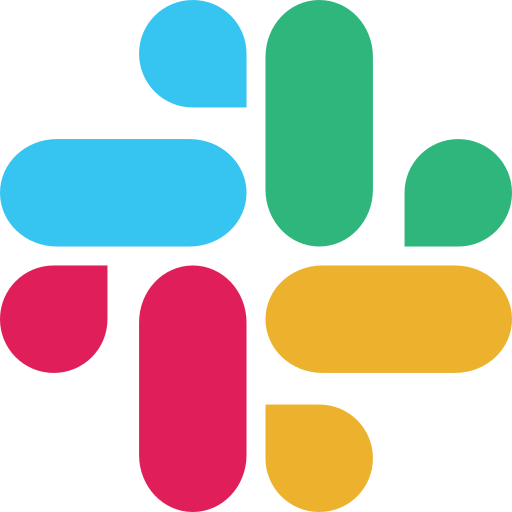
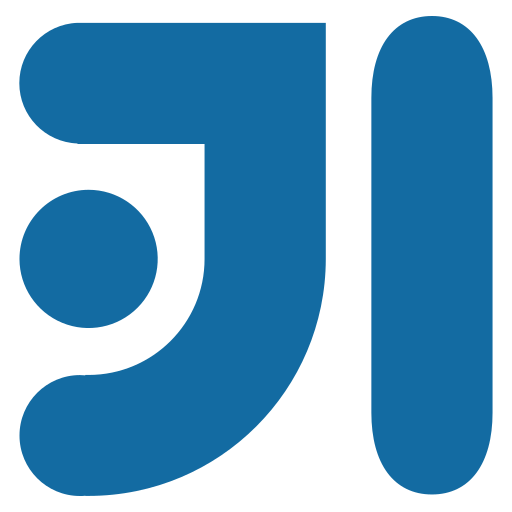
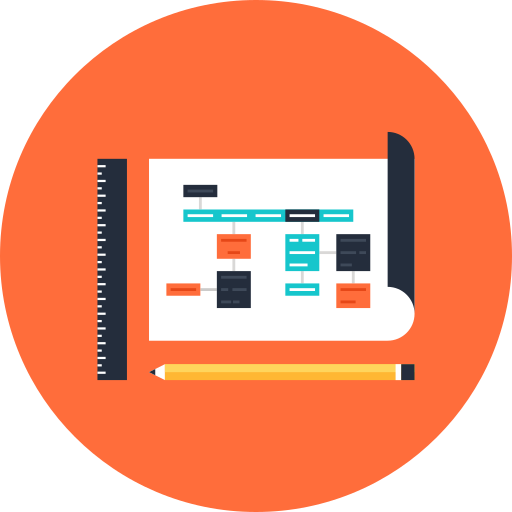

Content
QA Projects

UPEX
UPEX is a nonprofit educational program, currently specialized for QA, whose value is to provide the definitive solution to the need of Junior Testers or Trainees to obtain their first work experience. This program brings testers to a real work environment for small projects, carried out using agile methodologies on the JIRA platform, along with some integrations, performing all the tasks of the position in order to gain real work experience.
Information Project exampleCoderhouse
Coderhouse is a growing virtual academy that offers a wide range of courses aimed at developing new professionals for IT jobs. Among these courses, you can find the Manual QA Testing course, which I attended and successfully completed by submitting a final project based on analyzing the functionality of a real website and creating a detailed test case report outlining the defects found and its behavior. In the link, you will find my final project, analyzing Reverb.com, an e-commerce for musicians. This project was ranked among the top 10 in my class.
Information ProjectProgramming Projects

Ticmas Academy
Final project deployment for the "First Steps in Frontend Development" course, taught by Ticmas Academy as part of "Argentina Programa 4.0", a governmental scholarship program aimed at training aspiring technology professionals. This was my first ever website, a virtual resume.
Information ProjectEgg Cooperation
Final project deployment for the "Programming from Scratch" course, taught by Egg Cooperation, a course aimed at teaching the fundamentals of programming logic using PseInt, a software that operates with a pseudocode programming language made for educational purposes. To run the code, it is necessary to have PseInt installed and open the file from within the software. This is a text decoder required to complete the final exam.
Information Project
Alura ONE
Final project deployment for the "Beginner in Programming" course series, taught by Alura ONE, a scholarship program funded by Oracle and Alura. This is a web-based text decoder.
Information ProjectCertificates
Tools
|
JIRA |

Slack |
Trello |
MySQL |
|
Postman |
Visual Studio Code |

IntelliJ IDEA |
Git |
|
GitHub |
ChatGPT |
Programming
|
HTML5 |
CSS3 |
JavaScript |
Java |
SQL |
Valuable Skills
There are some other useful skills and tools I can handle:
|

Graphic Design |
Photoshop |
Microsoft Office |
Reaper |
Soft Skills
I am aware that in order to work in a healthy environment, it is necessary to bring human quality to the team. There are some of the soft skills that I have developed over the years of experience in different workspaces:
|

Resilient |
Flexible |
Goal oriented |
Conflict solver |
|
Communicative |
Empathetic |
Charismatic |
Self-aware |
|
Emotional Intelligence |
Creative |
Resourcefulness |
Open to criticism |
Contact
Spanish(Native)
English
Feel free to contact me and let me know how I can contribute!